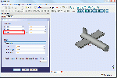

Contents
Descrizione
Opzioni della scheda Posizionamento. Queste opzioni riguardano soltanto la posizione dell'oggetto nello spazio, non riguardano altri attributi della forma. Internamente il posizionamento viene memorizzato come una posizione, e una rotazione (asse di rotazione e angolo trasformati in un quaternione [1]). Sebbene ci siano diversi modi di specificare una rotazione, per esempio con un centro di rotazione, questo è usato solo per influenzare il calcolo della rotazione e non viene memorizzato per le operazioni successive. Allo stesso modo, se viene specificato un asse di rotazione (1,1,1), esso può essere normalizzato se conservato nel quaternione e in seguito apparire nella forma (0.58, 0.58, 0.58) durante l'esplorazione dell'oggetto
Utilizzo
La funzione Posizionamento può essere attivata in diversi modi:
- Con uno script Python nella console e la sua API.

- oppure, dalla finestra Vista combinata → Proprietà → Dati → PPosizionamento → ...,

- oppure dal menu Modifica → Posizionamento....
Nella Vista combinata → Dati
- Cliccare su una forma per selezionarla.
- Fare clic su Placement per selezionare la voce, cliccare sul titolo, non sulla freccia
 . Appare un pulsante con tre puntini.
. Appare un pulsante con tre puntini. - Fare clic su questo pulsante per visualizzare la scheda Azioni di Posizionamento.
Opzioni
Traslazione:
- AZIONI X :
 Sposta il sistema di coordinate dell'oggetto nella direzione X (in avanti o all'indietro), rispetto alle coordinate degli assi di origine 0, 0, 0.
Sposta il sistema di coordinate dell'oggetto nella direzione X (in avanti o all'indietro), rispetto alle coordinate degli assi di origine 0, 0, 0. - AZIONI Y :
 Sposta il sistema di coordinate dell'oggetto nella direzione Y (a destra o a sinistra), rispetto alle coordinate degli assi di origine 0, 0, 0.
Sposta il sistema di coordinate dell'oggetto nella direzione Y (a destra o a sinistra), rispetto alle coordinate degli assi di origine 0, 0, 0. - AZIONI Z :  Sposta il sistema di coordinate dell'oggetto nella direzione Z (in alto o in basso), rispetto alle coordinate degli assi di origine 0, 0, 0.


Centro:
- AZIONI X : Sposta il centro di rotazione nella direzione X, rispetto alle coordinate dell'oggetto selezionato. (default: 0,0,0).
- AZIONI Y : Sposta il centro di rotazione nella direzione Y, rispetto alle coordinate dell'oggetto selezionato. (default: 0,0,0).
- AZIONI Z : Sposta il centro di rotazione nella direzione Z, rispetto alle coordinate dell'oggetto selezionato. (default: 0,0,0).
- AZIONI Utente ... : Permette di modificare i tre assi (X, Y, Z) in una sola operazione
 .
.

{kind=link}
{kind=link}
Rotazione:
Per regolare i parametri di rotazione sono disponibili due metodi:
- Prima opzione. Selezionare Asse di rotazione con angolo
 (opzione di default).
(opzione di default).
- AZIONI Asse : X : La rotazione viene eseguita sull'asse X.
- AZIONI Asse : Y : La rotazione viene eseguita sull'asse Y.
- AZIONI Asse : Z : La rotazione viene eseguita sull'asse Z.
- AZIONI Angolo : Angolo di rotazione in gradi da -360,00° a 360,00°. (Di default: 0,00°).
- Seconda opzione. Selezionare Angoli di Eulero
 .
.
Questa opzione può essere più facile da usare, tuttavia, anche per questo modo, ci sono alcune cose importanti da ricordare:
Le rotazioni positive sono in senso orario, se viste dal punto di origine, verso l'esterno, nel verso positivo di un asse. Ovvero, le rotazioni positive sono in senso antiorario se viste da un asse positivo verso il punto di origine.
- Imbardata : Il movimento di imbardata è la rotazione orizzontale di un veicolo attorno ad un asse verticale. Convenzionalmente l'asse di imbardata è l'asse Z e l'angolo di imbardata è indicato dall'angolo ψ.
- Beccheggio : Il beccheggio è il movimento di oscillazione muso-coda o prua-poppa attorno ad un asse orizzontale. Convenzionalmente l'asse di beccheggio è l'asse Y ed è indicato dall'angolo θ.
- Rollio : Il rollio è il movimento oscillatorio di un veicolo attorno al proprio asse longitudinale. Convenzionalmente l'asse di rollio corrisponde all'asse X ed è indicato dall'angolo φ.
Le rotazioni sono riferite alle coordinate del corpo di un oggetto nello spazio 3D.
Per essere riferite alle coordinate dello spazio 3D, le etichette dovrebbero essere Posizione, Altitudine e Elevazione oppure Azimut, Inclinazione e Elevazione.
Sono i Tait-Bryan angles. Per maggiori informazioni si può consultare Angoli di Eulero.
{kind=link}

- AZIONI Imbardata : Imbardata è la rotazione intorno all'asse Z, da destra a sinistra e viceversa. (L'imbardata è l'angolo Psi ψ). Valore da -360,00° a 360,00° (Di default: 0,00°).

- AZIONI Beccheggio : Beccheggio è la rotazione intorno all'asse Y, alzare o abbassare il naso. Valore da -360,00° a 360,00° (Di default: 0,00°).

- AZIONI Rollio : Rollio è la rotazione intorno all'asse X, dondolare le ali. Valore da -360,00° a 360,00° (Di default: 0,00°).
- AZIONI Applica le modifiche incrementali al posizionamento dell'oggetto : Quando viene selezionata, questa opzione azzera virtualmente i parametri, per consentire di inserire i valori senza dover fare dei calcoli con i parametri originali della forma.
Dopo aver confermato con OK , i valori inseriti si sommano ai valori della forma.
- Il pulsante Ripristina , riporta tutti i valori a 0,0,0.
Link e Esempi
Nel tutorial Aeroplane si trova un esempio pratico di utilizzo di questo comando.
Ulteriori informazioni si trovano nella pagina Posizionamento